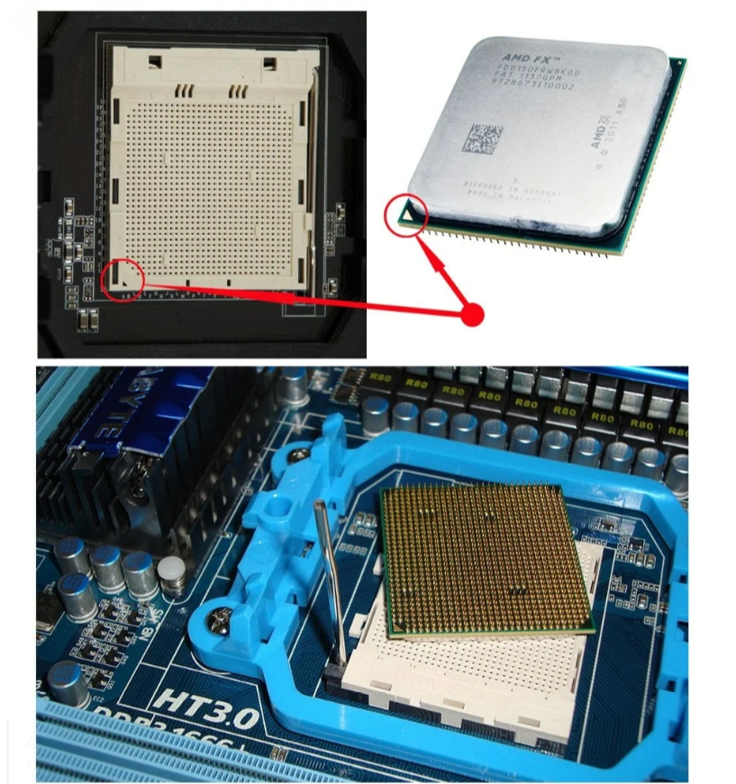
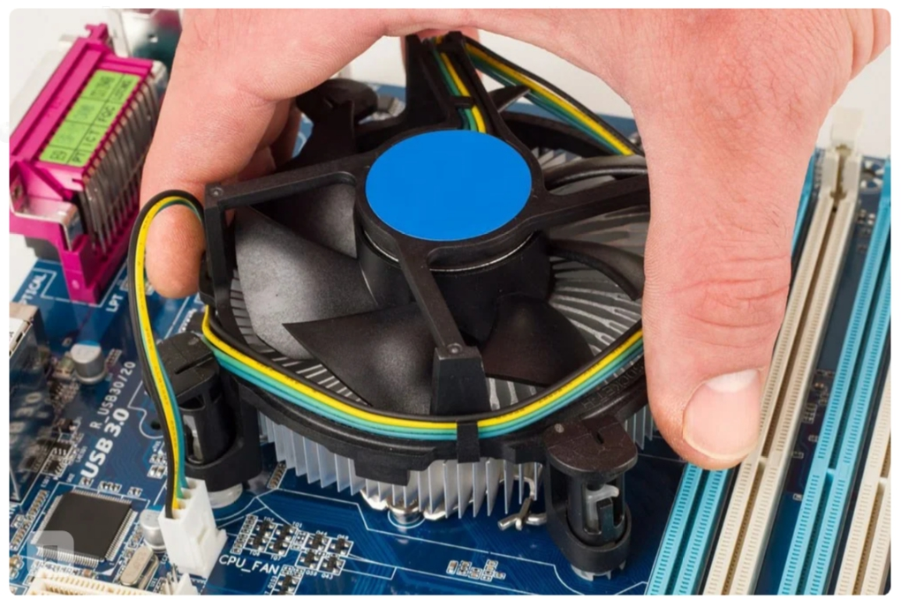

Что нужно что бы собрать пк
2 руки (одной хватит),
2 глаза,
терпение
и желание.
Без них никуда
1)Центральный процессор
2)Материнская плата
3)Видеокарта
4)Оперативная память
5)Блок питания
6)Корпус
7)Охлаждение процессора
8)Жесткий диск
Так же можно посмотреть видеофайл
Установка процессора:
Начать нужно с установки процессора в материнскую плату, а не с установки материнской платы в корпус. Так будет попросту удобнее. На материнской плате находим квадратную металлическую крышечку и открываем ее. Перед нами открывается место для процессора. Для правильного расположения на процессоре существуют выемки, а на материнской плате - выпуклости. Но надо иметь в виду, что материнская плата должна быть совместима с маркой и линейкой вашего процессора. То есть материнские платы для одних процессоров не подходят к другим. О совместимости лучше спросить у консультантов при покупке мат. платы или процессора. Теперь берем процессор и аккуратно вставляем его в разъем. Теперь нужно закрыть процессор крышкой.
Установка охлаждения ЦПУ:
После установки камня нужно поставить охлаждение для него. Но перед установкой необходимо нанести термопасту на процессор. Правда, сейчас практически на всех кулерах уже нанесена термопаста. Если таковой нет, тогда тоненьким слоем аккуратно нанесите ее на процессор (сделать это можно с помощью пластиковой карты).Теперь установим кулер. Крепления бывают разные, просто следуйте инструкции. После установки немного пошевелите охлаждение, оно должно очень крепко сидеть на материнской плате.
Оперативная память:
Пришло время для установки оперативной памяти, и тут ничего сложного нет. Разъем для нее обычно находится сбоку от процессора и их минимум два. Просто отодвигаем защелки и вставляем ее в разъем так, чтобы защелки закрылись.
Установка блока питания:
Блок питания надо ставить в корпус перед материнской платой в большинстве случаев. В современных корпусах место для него находится снизу, но может быть и сверху. Но так или иначе, а принцип его установки не меняется. В комплекте с блоком должны идти болтики, если таких нет, то они идут с корпусом. Просто вставляем блок питания на свое место и закручиваем болтики.
Установка жесткого диска:
Место для жесткого диска в корпусе отведено ближе к передней его части. Вставляем его в разъем и фиксируем болтами с корпуса.
Установка материнской платы
Для материнской платы в корпусе есть специальные выступы, так называемые "пни". А на материнской плате есть отверстия для этих пней. Ставим материнскую плату на них и прикручиваем ее с помощью болтиков, идущих вместе с корпусом. Нужно упомянуть, что не все пни вы будете задействовать. Все, материнская плата установлена.
Установка видеокарты
Видеокарта ставится в длинный разъем под процессором, точно так же как и оперативная память. Отодвигаем зажим и вставляем видеокарту. Дополнительно нужно закрепить видеокарту винтом.
Подключение всех комплектующих
Осталось только соединить проводами все составляющие системного блока. Питание материнской платы осуществляется через самый большой на ней разъем справа. Просто подключаем его с блока питания. У него же находим провод с названием "CPU" и втыкаем его в разъем с таким же названием на материнской плате сверху. Это питание процессора. Для подключения жесткого диска нужно взять разъем "SATA", идущий вместе с корпусом и подключить его к материнской плате и к жесткому диску. Еще надо подключить к нему провод "SATA" от блока питания. Теперь подключение передней панели корпуса к материнской плате. Это проводы, идущие от корпуса. Подключать их следует в нижнюю часть мат. платы. Все разъемы, как и провода, подписаны. Поэтому если быть внимательным, то все правильно разместить не составит большого труда. Теперь закрываем боковую крышку корпуса и подключаем к нему монитор, мышь и клавиатуру. Все готово, можно начинать установку операционной системы.

